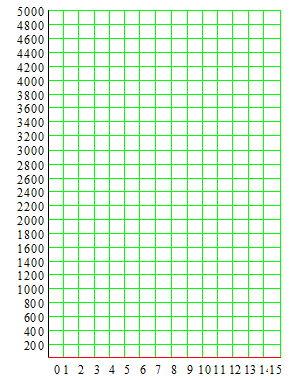
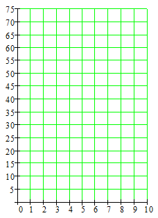

In this Lesson we introduce the basic notation and terminology for functions. Students have already seen many examples of functions in their study of linear and quadratic equations, so point out that this lesson is more about a new language than about new ideas.
This might be a good time to review the process of reading the Lesson. Ask students to bring their textbook to class, and go over the reading with them. Point out the sub-heads for each section, and the summary boxes. Go over the Reading Questions and each Exercise with the class. There will probably be some confusion about whether a table represents a function: is it allowed to have two different inputs with the same output?
Then go over Activity 2. You could ask the class to hand in either or both of Activities 1 and 3, perhaps as a group project. Students usually find this material relatively easy after the units on quadratic models.
Activity5.1.1.Epidemics.
A contagious disease whose spread is unchecked can devastate a confined population. For example, in the early sixteenth century Spanish troops introduced smallpox into the Aztec population in Central America, and the resulting epidemic contributed significantly to the fall of Montezuma’s empire.
Suppose that an outbreak of cholera follows severe flooding in an isolated town of 5000 people. Initially (on Day 1), 40 people are infected. Every day after that, 25% of those still healthy fall ill.
At the start of the second day (Day 2), how many people are still healthy?
How many fall ill during Day 2?
What is the total number of people infected at the end of Day 2?
How many people are still healthy at the end of Day 2?
Record your answers in the table.
Day
New Patients
Total Infected
Number Healthy
1
40
40
4960
2
\(\hphantom{00000}\)
\(\hphantom{00000}\)
\(\hphantom{00000}\)
3
\(\hphantom{00000}\)
\(\hphantom{00000}\)
\(\hphantom{00000}\)
4
\(\hphantom{00000}\)
\(\hphantom{00000}\)
\(\hphantom{00000}\)
5
\(\hphantom{00000}\)
\(\hphantom{00000}\)
\(\hphantom{00000}\)
6
\(\hphantom{00000}\)
\(\hphantom{00000}\)
\(\hphantom{00000}\)
7
\(\hphantom{00000}\)
\(\hphantom{00000}\)
\(\hphantom{00000}\)
8
\(\hphantom{00000}\)
\(\hphantom{00000}\)
\(\hphantom{00000}\)
9
\(\hphantom{00000}\)
\(\hphantom{00000}\)
\(\hphantom{00000}\)
10
\(\hphantom{00000}\)
\(\hphantom{00000}\)
\(\hphantom{00000}\)
Fill in the rest of the table for ten days. Round off decimal results to the nearest whole number.
Use the third column of the table to plot the total number of infected residents, \(I\text{,}\) against time, \(t\text{.}\) Connect your data points with a smooth curve.

Do the values of approach some largest value? Draw a dotted horizontal line at that value of \(I\text{.}\) Will the values of \(I\) ever exceed that value? Why or why not?
What is the first day on which at least 50% of the population is infected?
Look back at the table. What is happening to the number of new infected residents each day as time goes on? How is this phenomenon reflected in the graph? How would your graph look if the number of new patients every day were a constant?
Summarize your work: In your own words, describe how the number of residents infected with cholera changes with time. Include a description of your graph. Is \(I\) a function of \(t\text{?}\) Why or why not?
Activity5.1.2.Function Notation.
Data indicate that U.S. women are delaying having children longer than their counterparts 50 years ago. The table shows \(P=f(t)\text{,}\) the percent of 20-24 year old women in year \(t\) who had not yet had children.
Year, \(t\)
1960
1965
1970
1975
1980
1985
1990
1995
2000
% of Women, \(P\)
47.5
51.4
47.0
62.5
66.2
67.7
68.3
65.5
66.0
How does the table support the assumption that \(P\) is a function of\(t\text{?}\) Does this assumption make sense for the context of the problem?
Evaluate \(f(1985)\) and explain what it means.
Estimate a solution to the equation \(f(t)=68\) and explain what it means.
In 1997, 64.9% of 20-24 year old women had not yet had children. Write an equation with function notation that states this fact.
Activity5.1.3.Functions and Graphs.
The table shows data obtained while heating a solid sample of stearic acid, a waxy solid used in making candles, soap, and some plastics. Heat was applied at a constant rate throughout the experiment.
Time (min)
0
0.5
1
1.5
2
2.5
3
4
5
6
7
8
8.5
9
9.5
10
Temp (\(\degree\)C)
19
29
40
48
53
55
55
55
55
55
55
64
70
73
74
Plot the data with time on the horizontal axis and temperature on the vertical axis. Is temperature a function of time? Why or why not?

Choose variables and use function notation to state that temperature is a function of time. Label the axes on your graph.
Is temperature a linear function of time? Why or why not? Describe the temperature as a function of time.
Energy (in the form of heat) is required to raise the temperature of a substance, and it is also needed to melt a solid substance to a liquid. By analyzing the graph, what do you think is the melting point of stearic acid? How long did it take the sample to melt?
Subsection5.1.1Check Your Understanding
In Activity 1, what is the input variable, and what is the output variable?
In Activity 2, can you find a formula for \(P\) in terms of \(t\text{?}\) Does this mean that \(P\) is not a function of \(t\text{?}\) Why or why not?
In Activity 3, is time a function of temperature? Why or why not?
In Activity 3, how can you estimate the temperature of the sample at times not listed in the table?
Subsection5.1.2Wrap-Up
In this Lesson, we worked on the following skills and goals related to functions:
Recognizing functions
Evaluating functions defined by tables, graphs, or equations
Using function notation
Subsection5.1.3Questions for Writing or Discussion
How would you know if a table of values does not come from a function?
What does it mean to evaluate a function?
Do linear equations \(y=mx+b\) and quadratic equations \(y=ax^2+bx+c\) define functions? Why or why not?
Give an example of a function in which two distinct values of the independent variable correspond to the same value of the dependent variable.
Concept Questions.
What distinguishes a function from other variable relationships?
The variables are related by a formula.
The values of the input and output variables must be different.
There cannot be two output values for a single input value.
There cannot be two input values for a single output value.
Use function notation to write the statement "\(L\) defines \(w\) as a function of \(p\text{.}\)"
\(\displaystyle L=w(p)\)
\(\displaystyle w=L(p)\)
\(\displaystyle p=L(w)\)
\(\displaystyle L=p(w)\)
Name three ways to describe a function.
By inputs, outputs, or evaluation
By tables, equations, or graphs
By the intercepts, the slope, or the vertex
By numbers, letters, or diagrams
If \(n=f(a)\text{,}\) what are the input and output variables?